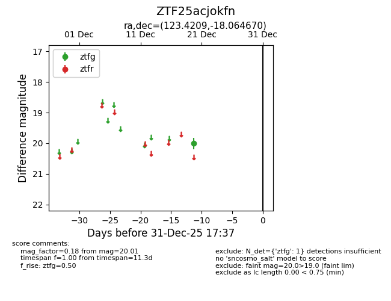
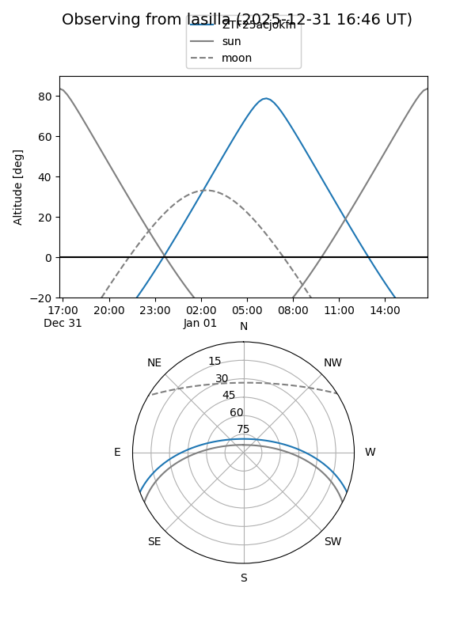
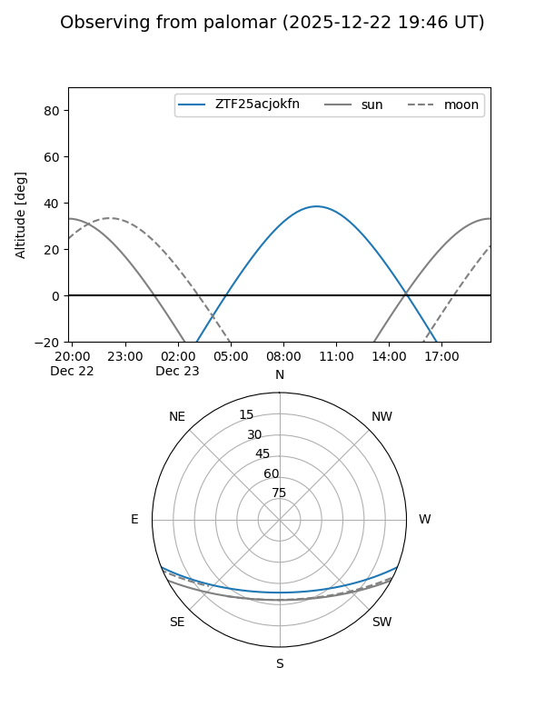

ZTF25acjokfn
Target ZTF25acjokfn at 2025-12-20 12:34
Aliases and brokers:
FINK: fink-portal.org/ZTF25acjokfn
Lasair: lasair-ztf.lsst.ac.uk/objects/ZTF25acjokfn
ALeRCE: alerce.online/object/ZTF25acjokfn
alt names
ZTF25acjokfn (ztf,fink_ztf)
Coordinates:
equatorial (ra, dec) = 123.4209,-18.06467
equatorial (HMS+DMS) = 08:13:41.02,-18:03:52.81
galactic (l, b) = (238.6232,+8.96147)
Flags:
Photometry:
last ztfg=20.01
1 ztfg detections
Lightcurve

Visibility


Additional plots